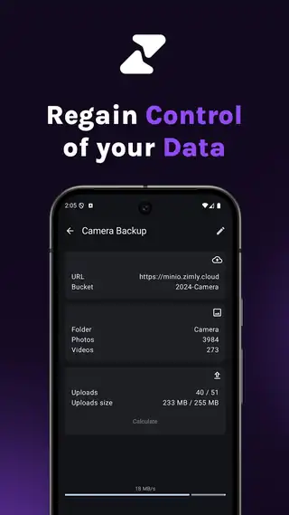
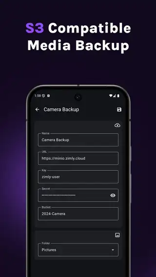

Zimly S3 Backup
إنترنت ومتصفحات
Zimly is an eye-catching, open-source app designed for synchronizing your local media and documents with any S3-compatible storage solution — whether self-hosted using platforms like Minio or cloud-based like AWS S3. Key Features: * Open-Source and Free: Explore the codebase and influence the roadma
✓ ترخيص مفتوح (GPL-3.0-only) · آخر تحديث: 2026-02-07
3.4.1الإصدار
9.5 MBالحجم
GPL-3.0-onlyالرخصة
Open in Kanzتحميل APK (9.5 MB)
Download APK
SHA-256: 43ed539af99b8280ae6f8f352b9ac5f976844c69d0e9aa9deaf566e77ff5e75b


امسح الكود لفتح صفحة التطبيق
Scan to open this app page
لو كنز مش متثبت عندك: نزّل متجر كنز.
Not installed? Get the Kanz store.